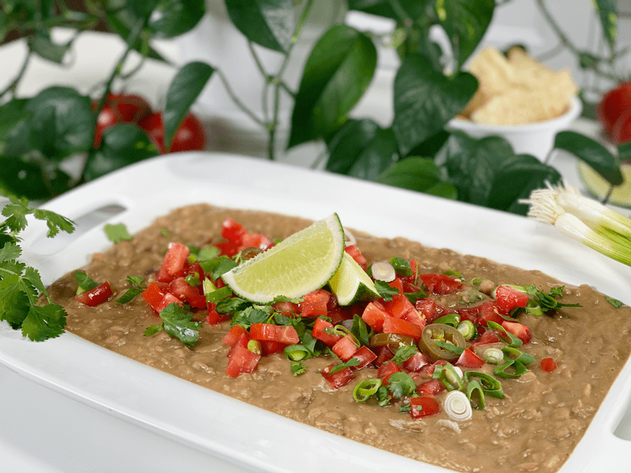
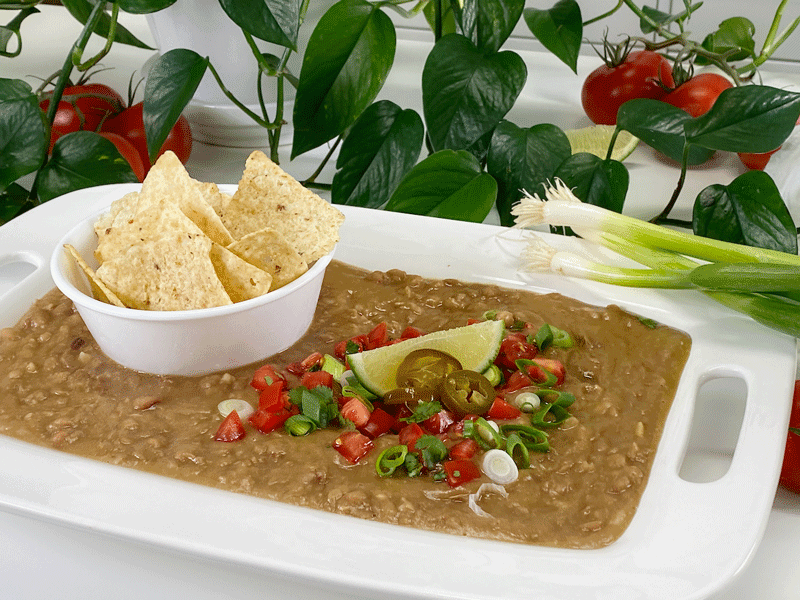
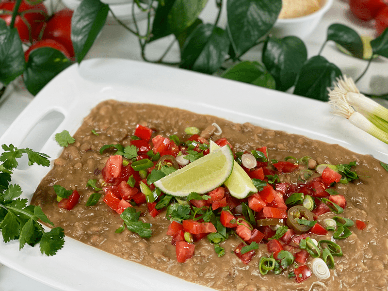
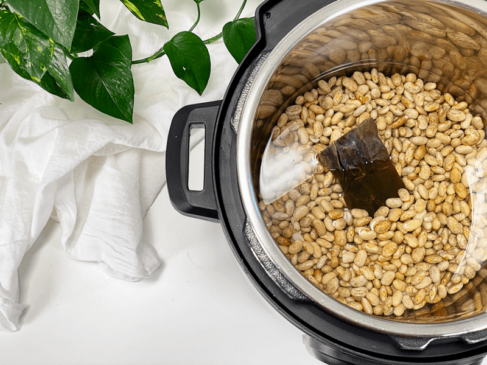
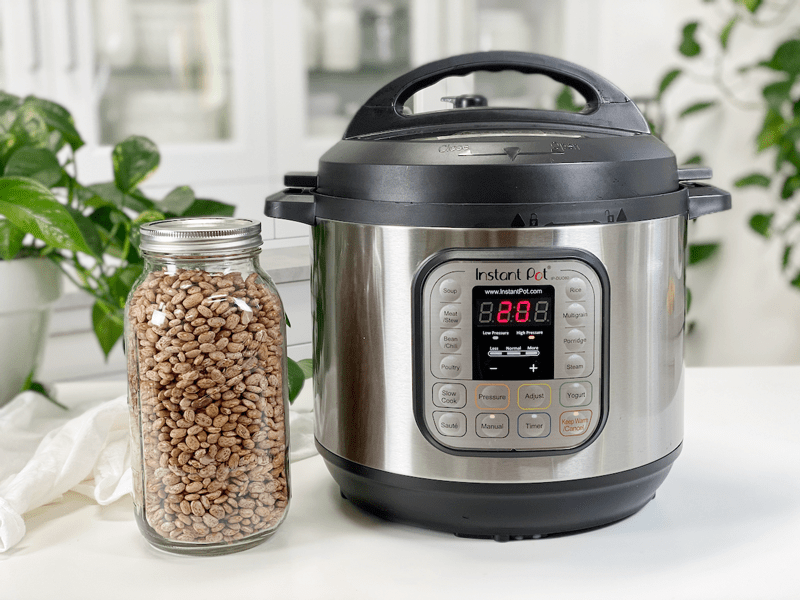
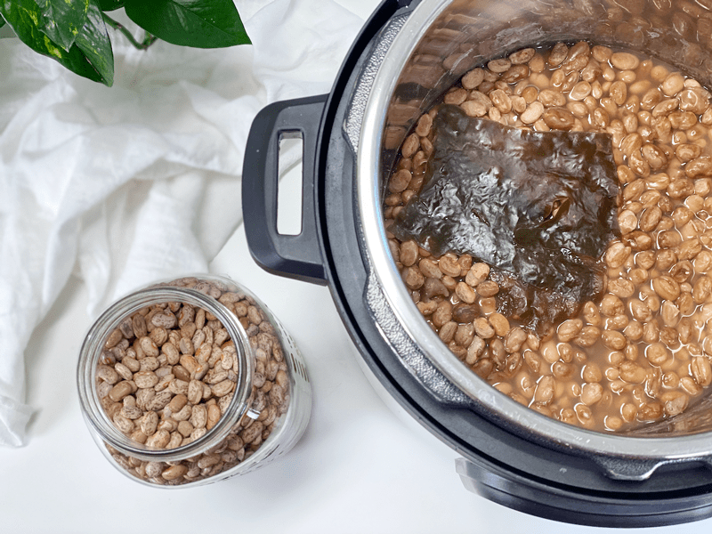
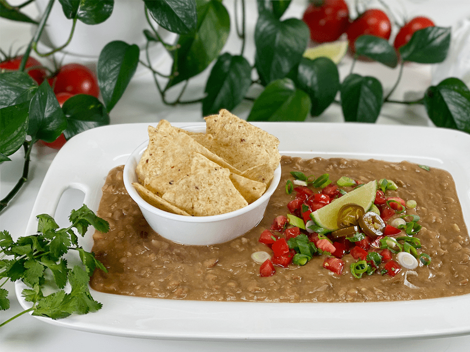

Refried Pinto Beans | Instant Pot, Stove Top | No Oil
I LOVE LOVE LOVE refried beans. I think they’re in my blood from birth or something. Every time I hear Mexican music (even in passing), I instantly want a bean burrito. It’s to the point that when Bob catches wind of the music, he turns to me and asks me if I want a bean burrito now. He knows me all too well. Growing up, Mom and I ate at a lot of fast-food chains. When Mom would ask me where I wanted to go, without fail…Taco Bell! I would order a bean burrito with a side of refried beans. I could never get enough beans! Beans are not musical notes for me; instead, they are like magical transporters to me, transporting me back to my childhood.

These refried beans are a snap to prepare and cook in the Instant Pot in a fraction of the time they would take on the stove top or in the slow cooker. But I will be sure to add how to cook them on the stove for those who don’t own an Instant Pot.
Soaking the Beans
When it comes to Instant Pot recipes for beans, rice, and grains…most people don’t soak before cooking. And those who do are soaking them are doing it to help soften the ingredients to shorten the cooking time; this is not the case in my kitchen. I always always always soak my beans, rice, grains, nuts, and seeds that we consume. It helps with digestion and reduces phytic acid, which can inhibit the absorption of specific vitamins and minerals. I have been using this technique for over ten years, and trust me, it becomes an automatic step. I included instructions below for how to do this.
Refried Bean Flavor
There are oodles of options when it comes to what flavorings you add to the beans. My goal for this recipe was to keep it simple, add no additional fat, and yet make it delicious! Because no matter how healthy a food may be, if it doesn’t taste good, you won’t eat it. My second goal was to make it as nutritious as possible, soaking the beans first and adding kombu seaweed. I have and will continue to say throughout my site that we are here to make every bite count.
- Prior to cooking, when you add the spices to the pot, give it a quick stir and taste the liquid. It should be a flavorful broth that you wouldn’t mind warming up and drinking, because it’s the liquid that adds flavor to the beans.
- If you want to use the beans without the liquid, save it. It is FULL of flavor and would be lovely added to a soup base.

Refried Bean Texture
Down below, I shared three different ways to blend the cooked beans to achieve different textures. When I first was tinkering around with this recipe, I blended everything in the cooking pot to a beautiful creamy texture. I was over the moon in love. I couldn’t wait for Bob to take a taste test. He took one bite and just stared at the wall with a blank look on his face, shrugged his shoulders, and said it was okay. I will admit, whenever this happens with a recipe, my heart sinks a little.
I asked him to explain why it was just okay. It boiled down to the creamy texture; it was too one-note for him. Oh! Well, that’s an easy fix. I popped back out into the Studio Kitchen and started soaking more beans for the next attempt. I don’t give up that easily. After they soaked and cooked, I blended the liquid and only half of the beans, mixed it all back together, and gave it a slight mashing. Bob LOVED it! Texture, texture, texture. I love both textures; you pick yours.
I also want to note that right after blending the cooked beans, they will be a bit runny. Once they cool, they REALLY thicken up. When reheated, they soften to the perfect consistency. This cooking, cooling, and reheating is perfect, since beans are a natural resistant starch. John Hopkins Medicine states, “When starches are digested, they typically break down into glucose. Because resistant starch is not digested in the small intestine, it doesn’t raise glucose. Gut health is improved as fermentation in the large intestine makes more good bacteria and less bad bacteria in the gut. Healthy gut bacteria can improve glycemic control.” (1) Read more about resistant starch (here).

Serving Suggestions
- Serve refried beans as a side dish with a garnish of any raw vegan cheese, such as Mozzarella Cheese, Mexican Chili Cheese, or click (here) for more ideas. Top with chopped red or green onions, chopped cilantro, diced tomatoes, sour cream, salsa, or guacamole.
- Use as a thickener for soups, stews, or chili.
- They are the perfect topper for nachos or as a chip dip.
- Add the refried beans to a burrito or taco fillings.
- Eat them by the spoonful… don’t let anything get in your way!
- This recipe yields 6.5 cups, which is great for batch cooking. Once cooked, you can leave some beans whole, blend some creamy, and make the rest chunky and rustic. By doing this, you can use them in different ways; top on salads, make Romaine taco lettuce boats, or use as a dip.
Make Every Bite Count
- Add kombu seaweed to help ease digestion and add a wallop of extra nutrients. Read about all the fantastic benefits (here).
- There’s no strong evidence that dried beans need to be organic. When I can’t find solid information, I error on the side of caution and go organic (if I can). Besides, the more we support organic, the more the industry sees a demand for it, which in return may lead to better growing practices.
- Create an atmosphere of peace and quiet, relaxation, and calm around your mealtimes. Light a candle, play some gentle music, and turn off the cell phones. Don’t eat when angry, upset, worried, or stressed. If you are feeling this way, go for a walk, clear your head, and breathe. Mealtimes are sacred.
 Ingredients
Ingredients
Yields 6.5 cups
- 2 cups dried pinto beans, soaked
- 4 cups water or vegetable broth
- 1 strip kombu seaweed
- 2 Tbsp vegan vegetable bouillon
- 1 tsp garlic powder or two cloves of garlic, minced
- 1 tsp onion powder or 1/2 onion, diced
- 1 1/2 tsp sea salt
- 1/4 cup green onion, sliced
Preparation
Soaking the Beans
- Before soaking the beans, spread them out on a dishtowel and pick through them, looking for rocks or other foreign objects.
- Place 2 cups of beans in 4 cups of water and 1 Tbsp of apple cider vinegar or lemon juice.
- Leave them on the counter to soak for 8 hours.
- After soaking the beans, drain and rinse away the soak water.
- Should you decide to skip the soaking process, you will need to adjust the cooking time because the soaked beans cook quicker.
- Just so you are aware, soaked beans give the dish a lighter color.
Instant Pot Method
- Place the beans, water (or broth), and kombu into the Instant Pot. Secure the lid and make the pressure valve is switched over to “Seal.”
- If you use vegetable broth, check the ingredients to see if salt is added. If so, cut back on the amount of salt in the recipe. Better to err on the side of caution. Besides, you always salt whatever you plate up.
- Kombu can be eaten once cooked. Just dice it up and stir it into your dish. You can also save it in the fridge after the beans have cooked and reuse it a couple of times before it breaks down and just naturally mixes into the food.
- Press the “Manual” button, set to “HIGH,” and manually adjust the timer to 20 minutes. Back away slowly and let the magic happen while you trot off and find something else to do.
- When the machine beeps, let it natural release for 25 minutes or until the pin drops, which indicates all the pressure has been let out.
- Remove the lid. You will see some standing liquid, which is to be expected and desired. With a fork, gently lift the kombu seaweed out and place in an airtight container to store in the fridge for your next creation…or blend it up in the beans. You won’t detect the taste.
- If you use the kombu in another dish, you might want to rinse it off to remove any of the strong savor flavors from the beans. It all depends on what you add it to.
Stove Top Method
- Place the beans into a large soup pot, add the kombu, and cover with at least 3 inches of water standing on top of the beans.
- Bring to a boil and then lower heat to simmer, covered, for about 2 1/2 hours.
- The beans are done when they are soft, and the skin is just beginning to break open.
- Pick a blending method from below based on what texture you enjoy.
Pick the Texture
Chunky Texture
- Place a colander or large sieve over a large bowl and drain the beans. Set the liquid aside.
- Place the beans, onion powder, garlic powder, and salt in the empty pot and lightly purée them with an immersion blender or with a potato masher.
- Add some of the reserved liquids, as needed for the desired consistency, and reserve the rest for another use.
- Taste the beans and adjust the spices, as needed.
- Hand mix in the sliced green onions, using some of the green stalks too. You can blend this in as well, but I like the texture and the ability to distinguish the little bits of onions rather than it getting lost in the refried bean mixture.
- The refried beans will thicken once chilled, and once reheated, they will be the perfect texture.
Smooth Texture
- If you want a smooth and creamy texture, pour the beans, seasonings, and all the liquid into the blender. Blend until creamy.
- Taste the beans and adjust the spices, as needed.
- Hand mix in the sliced green onions, using some of the green stalks too.
- The refried beans will thicken once chilled, and when reheated, they will be the perfect texture.
Keep Them Whole
- Although they wouldn’t be considered refried beans, you can decide to keep the beans whole. If this is the case, add all the seasonings to the cooking pot along with the soaked beans.
- Once cooked, drain off the liquid and enjoy the beans.
- Don’t toss the cooking liquid. You can add it to your next pot of soup (freeze it if need be). Also, if you plan on storing the cooked whole beans in the fridge or freezer, fill the container with the beans, then top it off with the broth.
Food Storage
When it comes to storing hot foods, we have a 2-hour window. You don’t want to put piping hot foods directly into the refrigerator. However, If you leave food out to cool, and forget about it, you should, after 2 hours, throw it away to prevent the growth of bacteria. (source) Large amounts should be divided into smaller portions and put in shallow covered containers for quicker cooling in a refrigerator that is set to 40 degrees (F) or below.
- Fridge: In a sealed container, it will keep for up to 3-5 days.
- Freezer: Place in single-serving freezer-safe containers meal-size portions for longer storage.
-

-
Add the beans, kombu seaweed, and water to the pot.
-

-
Press “Manual”, set on high heat, and adjust the timer to 20 minutes.
-

-
Allow it to natural release for up to 25 minutes. Remove the lid and proceed with blending options.
-

© AmieSue.com